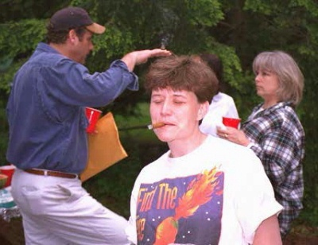
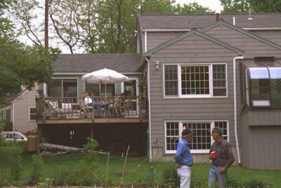
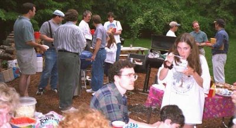

Cast, Crew and Victims from Hot Luck 97 in Concord, MA

Kit Anderson explains to wife Joelle why they call her "Firegirl"
2.

Host Jim McGrath (on right) conducts tour of the grounds
3.

Foreground: Michael Jackon and his subtle
Please Note: These pictures have been scaled and cropped from the original 600 X 400 pixel size. If you would like a copy of a full size original drop me an EMail and I'll send you one.
1.
("Have you tried the bread?" she asked innocently) sister Gayle.
Background Left: Ted Duffy, Dave Alie, Hank Watters and Gary Howard
(And the scenic rear view of Mark Stevens)
Background Right: Dave Westabe in center